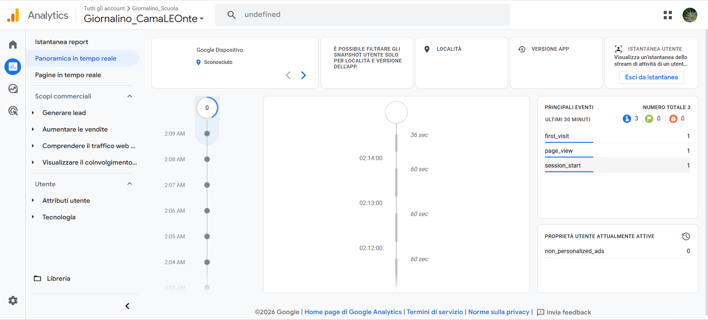

📖 Manuale Operativo - Il CamaLEOnte
Questa documentazione riassume le caratteristiche tecniche, le procedure di aggiornamento e gli standard di qualità per la rivista digitale.
1. Funzioni Implementate
- Sfoglio Turn.js: Animazione fluida delle pagine per un'esperienza realistica.
- Indice Interattivo: Area cliccabile a pagina 3 per il salto diretto alle sezioni.
- Video Autoplay (Pag 23): Avvio automatico intelligente. Il video riparte da zero ogni volta che si entra nella pagina e si mette in pausa quando si esce.
- Google Analytics 4: Monitoraggio degli utenti attivi e del comportamento di lettura integrato.
2. Ottimizzazione e Qualità Immagini
Per garantire che la rivista sia nitida su ogni dispositivo, è fondamentale seguire questi parametri durante la conversione da PDF a PNG:
- Risoluzione (DPI): Impostare almeno 300 DPI. Valori standard (72 o 150) rendono i testi sgranati.
- Larghezza minima: Almeno 2000px per pagina.
- Effetto Retina: Caricando immagini a risoluzione doppia rispetto alla visualizzazione (960px), il browser le rimpicciolisce rendendo il testo estremamente nitido.
PROCEDURA DI CORREZIONE: Riconverti il PDF a 300 DPI, rinomina i file da
1.png a 24.png, sovrascrivili nella cartella locale e procedi con il comando git push.
3. Monitoraggio e Performance
Riferimenti visivi per controllare l'andamento della rivista tramite i pannelli di controllo.

Monitoraggio degli utenti attivi nel pannello "In tempo reale" di Analytics.

Analisi delle sorgenti di traffico e della durata delle sessioni.

Stato della pubblicazione online su GitHub Pages.
4. Come Aggiornare il Sito
Esegui questi comandi nel terminale di VS Code ogni volta che modifichi il codice o aggiungi nuove immagini (es. dopo la conversione a 300 DPI):
git add .
git commit -m "Aggiornata risoluzione immagini e documentazione"
git push origin main
5. Struttura dei File
index.html: Il file sorgente principale del progetto.[1-24].png: Le pagine PNG del giornalino (Ottimizzate a 300 DPI).23.mp4: Il file video per la pagina 23.favicon.png: L'icona visualizzata nella scheda del browser.stats_analytics.png: Screenshot di riferimento per la documentazione.